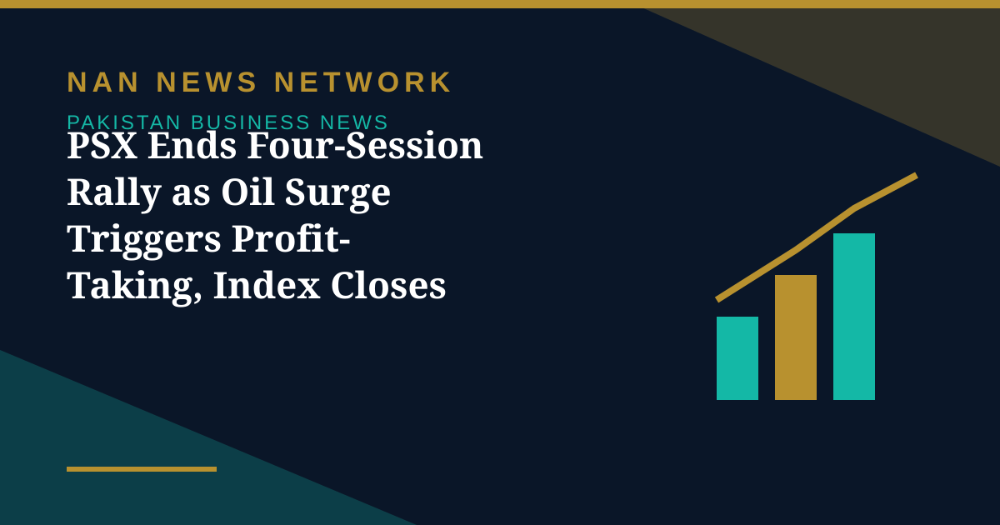

PSX Ends Four-Session Rally as Oil Surge Triggers Profit-Taking, Index Closes at 166,409

The Pakistan Stock Exchange came under heavy profit-taking on Friday, ending its four-session northward run, Dawn reported on October 31.
A volatile final session
Topline Securities said the market remained largely in negative territory, with the index down 784.19 points, or 0.47%, to close at 166,409 points, against 167,193.44 in the previous session. The index reached an intraday high of 167,339 and a low of 166,535, closing near the day's low after failing to sustain early gains. The top negative contributors — United Bank, Lucky Cement, Habib Bank, Fatima Fertiliser and Attock Refinery — weighed the index down by 359 points, while Engro Fertiliser, Pakistan Oilfield, Meezan Bank, Engro Holdings and OGDC provided support, adding 177 points.
Why sentiment turned
Bearish sentiment was driven mainly by rising crude oil prices, expectations of heightened US-Iran tensions following the US midterm elections, and reported attacks on tankers in the Strait of Hormuz, raising concerns about supply disruptions. Brent crude surged above $116 per barrel, and the Finance Division has projected October inflation at 9.5% to 10.5% amid elevated energy prices, with diesel at Rs400.67 and petrol at Rs377.91 per litre. Trading volume edged up 1.05% to 825.46 million shares, though turnover plunged 26.69% to Rs23.12 billion. For the month, the KSE-100 ended October down 2.09%, with brokers citing support near the 160,000 level.
Sources: Dawn, Express Tribune, The Nation, October 31, 2026
More on Pakistan Business News
- Pakistan Cement Makers' Profits Rise 17% to Rs34.2 Billion in First Quarter of FY27
- Pakistan's Exports Rise 7.7% to $8.5 Billion but Trade Gap Widens in First Quarter
- SIFC Finalises 38 Projects Targeting $40 Billion in Investment, Senate Panel Told
- PSX Extends Recovery as KSE-100 Closes Above 167,000 on October 29
- Petrol, Diesel Prices Rise From October 29 as Government Revises Fuel Rates
- KSE-100 Gains 1,269 Points to Close Above 165,700
- Fauji Fertilizer's Nine-Month Profit Hits Rs71 Billion on Strong Urea Demand
- KSE-100 Climbs 1,428 Points to Close at 164,467 in Bullish Session
- Pakistan Signs $2.25 Billion Deal for Lithium Battery Gigafactory in Rawalpindi
- Gold Prices Rise by Rs1,400 per Tola in Pakistan on Monday
- Business Confidence Falls to 48 in October, State Bank Survey Shows
- Diesel Raised to Rs393.66 a Litre, Petrol Unchanged at Rs377.71
- FBR Activates Faceless Tax Audit System From October 15
- Pakistan-Iran Trade Disruption Puts $2.8 Billion Annual Trade at Stake